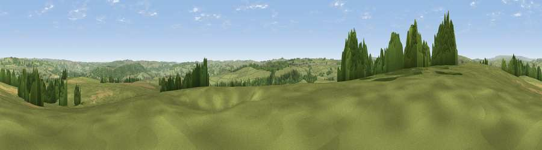

Viewpoint near Over Haddon
#15410 in England · top 20% of its area beats it · near Over HaddonWhere it is
The exact computed spot (SK 18425 67575). Click the marker for map links.
The view, rendered

A 360° render of this exact spot computed from the terrain model, tree cover and land cover — summer colours, afternoon light, calibrated against photographs of famous viewpoints. Real trees, hedges and buildings will differ in detail.
The panorama
Grey silhouette: terrain skyline in each direction (720 bearings, Earth curvature and refraction included). Dashed green: skyline with trees (+15 m) and buildings (+8 m) as obstacles. Blue strip: how far the ground is visible on each bearing.
Where the view opens
Wedge length = distance to the farthest visible ground on that bearing (vegetation-aware). Rings at 10, 25 and 50 km.
What fills the view
77% grassland · 16% woodland · 6% cropland ·
Angular shares of the visible panorama (visual magnitude), not map area. Landscape diversity 0.30 (0–1 Shannon).
Key numbers
More beautiful places nearby
The staircase of upgrades: each row has a higher view potential than everything closer. Driving times are estimates from straight-line distance, calibrated against real road routing — check an actual route before setting out.
| Place | Direction | Drive | Score |
|---|---|---|---|
| Viewpoint near Taddington | NW · 5 km | ~12 min | 57.3 |
| Viewpoint near Great Longstone | NNE · 6 km | ~12 min | 58.3 |
| Longstone Moor | N · 6 km | ~12 min | 60.4 |
| High Rake | NNE · 6 km | ~13 min | 71.1 |
| Tissington Hill | SSW · 15 km | ~27 min | 75.5 |
| Viewpoint near Mow Cop | WSW · 34 km | ~52 min | 78.9 |
| Viewpoint near Mow Cop | WSW · 34 km | ~52 min | 80.2 |
| Viewpoint near Harthill | W · 68 km | ~91 min | 80.5 |
53.20493, -1.72561 · source: screening · position refined by local search. Computed location — check access rights before visiting.